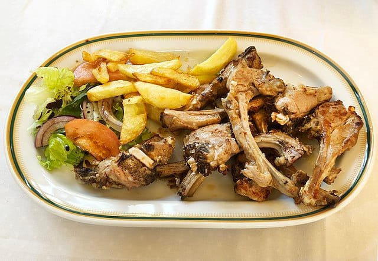
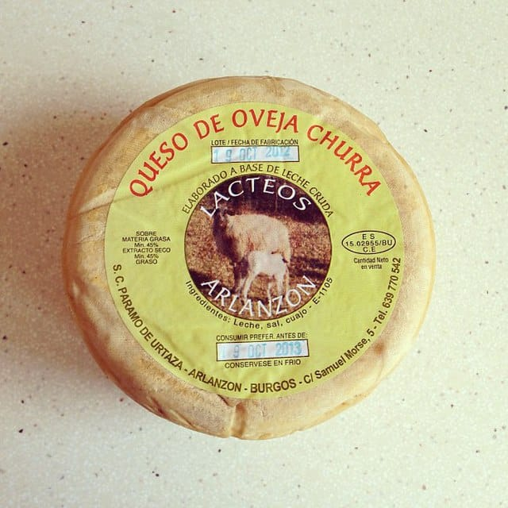

Burg
s
Historia y cultura
Turismo y ocio
Gastronomía
Enlaces de interés
Gastronomía
EXPLORA

Chuletillas de cordero
Leer más >

Los mejores postres: Queso fresco de Burgos
Leer más >
Comida Cultura y Diversión
Leer más >
 s
s